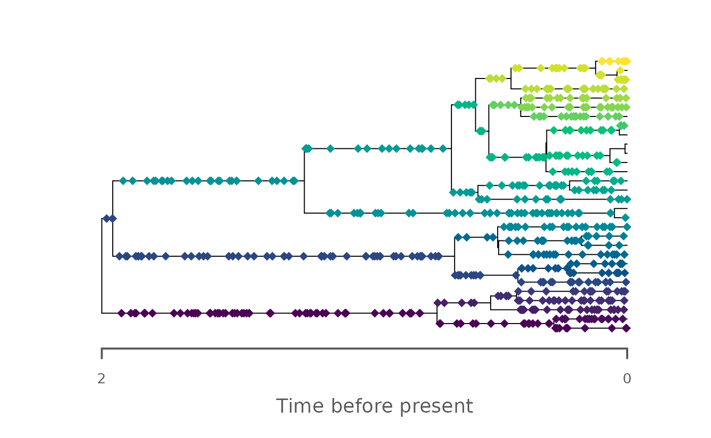

Integration with the FossilSim and paleotree packages
Source:vignettes/FossilSim_integration.Rmd
FossilSim_integration.RmdThis vignette describes how to integrate the StratPal
package with the FossilSim and the paleotree
packages.
Integration with the FossilSim package
As is, the StratPal package handles fossils
objects as constructed by the FossilSim package. These
objects represent fossils sampled along a tree (phylogeny). They can be
transformed using the functions apply_taphonomy and
apply_niche. This will remove fossil occurrences according
to preservation potential and change on taphonomic conditions (or niche
definition and change in gradient). Note that this corresponds to an
nonparametric expansion of the variable recovery model as implemented in
FossilSim.
As example, we examine the preservation of a phylogenetic tree with taxonomy and sampled fossils 12 km from shore in a carbonate platform.
Stratigraphic basis
# construct age-depth model
adm_12km = tp_to_adm(t = scenarioA$t_myr, # 12 km from shore
h = scenarioA$h_m[,"12km"],
T_unit = "Myr",
L_unit = "m")
plot(adm_12km, lty_destr = 0,
main = "Age-depth model 12 km from shore",
lwd_destr = 3)
T_axis_lab()
L_axis_lab()Trees with fossils
For the biological components, we simulate a tree with taxonomy and
fossils in the time domain using FossilSim:
set.seed(42)
# simulate phylogenetic tree
tree = ape::rbdtree(birth = 3, death = 1, Tmax = max_time(adm_12km))
# simulate taxonomy along the tree
s = FossilSim::sim.taxonomy(tree = tree)
# simulate fossils based on taxonomy
sampling_rate = 40 # high sampling rate
f = FossilSim::sim.fossils.poisson(rate = sampling_rate, taxonomy = s)
# plot tree with taxonomy and fossil times
FossilSim:::plot.fossils(f, tree = tree, taxonomy = s, show.taxonomy = TRUE, rho = 0)
Ecological effects
Lets assume all taxa have identical niches and a preferred water depth of around 60 m, and are rather tolerant to fluctuations in water depth:
# define niche
my_niche = snd_niche(opt = 60, tol = 40, cutoff_val = 0)
# plot niche
wd_p = seq(-2, 100, by = 1)
plot(x = wd_p,
y = my_niche(wd_p),
xlab = "Water depth [m]",
ylab = "Collection probability",
type = "l",
main = "Collection probability with water depth",
lwd = 3)
plot(x = get_T_tp(adm_12km),
y = adm_12km |> get_T_tp() |> gc() |> my_niche(),
type = "l",
xlab = "Time [Myr]",
ylab = "Collection probability",
main = "Collection probability with time",
lwd = 3)After accounting for niches, the tree with niches looks like
f_niche = f |>
rev_dir(ref = max_time(adm_12km)) |>
apply_niche(niche_def = my_niche, gc = gc) |>
rev_dir(ref = max_time(adm_12km))
# plot tree after accounting for taxon niches
FossilSim:::plot.fossils(f_niche, tree, taxonomy = s, show.taxonomy = TRUE, rho = 0)Note that although there are many more lineages present at the end of
the simulation, there are fewer fossils recovered. This is because the
water depth is too low (the platform is drowning) to actually observe
the taxa. Note that the apply_niche function is only
applied to the fossils object and not to the tree and the
taxonomy object, as they are not influenced by niche preferences.
Stratigraphic effects
Now let us examine how the tree would be observed in the stratigraphic domain:
## transform tree, fossils, and taxonomy into stratigraphyc domain
# using the age-depth model
tree_strat = time_to_strat(tree, adm_12km) # no transformation of time to age required
s_strat = s |> # taxonomy object in the time domain
rev_dir(ref = max_time(adm_12km)) |> # convert age to time
time_to_strat( adm_12km , destructive = FALSE) |> # transform using age-depth model
rev_dir(ref = max_height(adm_12km)) # transform back into age
f_strat = f |> # same here
rev_dir(ref = max_time(adm_12km )) |>
time_to_strat( adm_12km , destructive = TRUE)|> # destroy fossils coinciding with gaps
rev_dir(ref = max_height(adm_12km ))
FossilSim:::plot.fossils(f_strat,
tree = tree_strat,
taxonomy = s_strat,
show.taxonomy = TRUE,
rho = 0,
show.axis = FALSE)
axis(1)
mtext(1, text = "Stratigraphic position [m]", line = 2)The accumulation of fossils on the right side is due to the stratigraphic condensation observable at 12 m height in the age-depth model.
Combined stratigraphic and ecological effects
Naturally, both ecological and stratigraphic effects can be combined
by applying the niche model to the fossils object:
## transform tree, fossils, and taxonomy into stratigraphyc domain
# using the age-depth model
tree_strat = time_to_strat(tree, adm_12km) # no transformation of time to age required
s_strat = s |> # taxonomy object in the time domain
rev_dir(ref = max_time(adm_12km)) |> # convert age to time
time_to_strat( adm_12km , destructive = FALSE) |> # transform using age-depth model
rev_dir(ref = max_height(adm_12km)) # transform back into age
f_strat = f |> # same here
rev_dir(ref = max_time(adm_12km )) |>
apply_niche(niche_def = my_niche, gc = gc) |> # apply niche model
time_to_strat( adm_12km , destructive = TRUE)|> # destroy fossils coinciding with gaps
rev_dir(ref = max_height(adm_12km ))
FossilSim:::plot.fossils(f_strat,
tree = tree_strat,
taxonomy = s_strat,
show.taxonomy = TRUE,
rho = 0,
show.axis = FALSE)
axis(1)
mtext(1, text = "Stratigraphic position [m]", line = 2)Trees and taxonomy object are not modified by
apply_niche and apply_taphonomy, as they are
are not subject to sampling effects.
Technical notes
FossilSim uses age relative to the present, whereas
admtools uses time. The function
admtools::rev_dir accounts for this by reversing time to
age and the other way around (relative to a reference point). Use this
function on all object produced by FossilSim before
entering and after leaving the admtools and
StratPal ecosystem.
By default, axis labels of FossilSim are “Time before
the present”. In the context of StratPal and
admtools this is misleading, as the present might refer to
the end of the observation/the highest stratigraphic point. As of now,
no option to override the default axis labels are available. For correct
axis labels, set show.axis = FALSE and manually create the
axis using axis and mtext.
Integration with paleotree
To combine the StratPal package with the
paleotree package, please convert the
paleotree format into the FossilSim format as
described in the paleotree vignette of the
FossilSim vignette:
vignette("paleotree", package = "FossilSim")After conversion you can proceed as described in the section
Integration with the FossilSim package
References
- Barido-Sottani J, Pett W, O’Reilly JE, Warnock RCM. Fossilsim: An r package for simulating fossil occurrence data under mechanistic models of preservation and recovery. Methods Ecol Evol. 2019; 10: 835–840. https://doi.org/10.1111/2041-210X.13170
- Bapst, D.W. (2012), paleotree: an R package for paleontological and phylogenetic analyses of evolution. Methods in Ecology and Evolution, 3: 803-807. https://doi.org/10.1111/j.2041-210X.2012.00223.x
- Warnock R, Barido-Sottani J, Pett W, Joseph O, Stolz U (2024). FossilSim: Simulation and Plots for Fossil and Taxonomy Data. R package version 2.4.1, https://CRAN.R-project.org/package=FossilSim